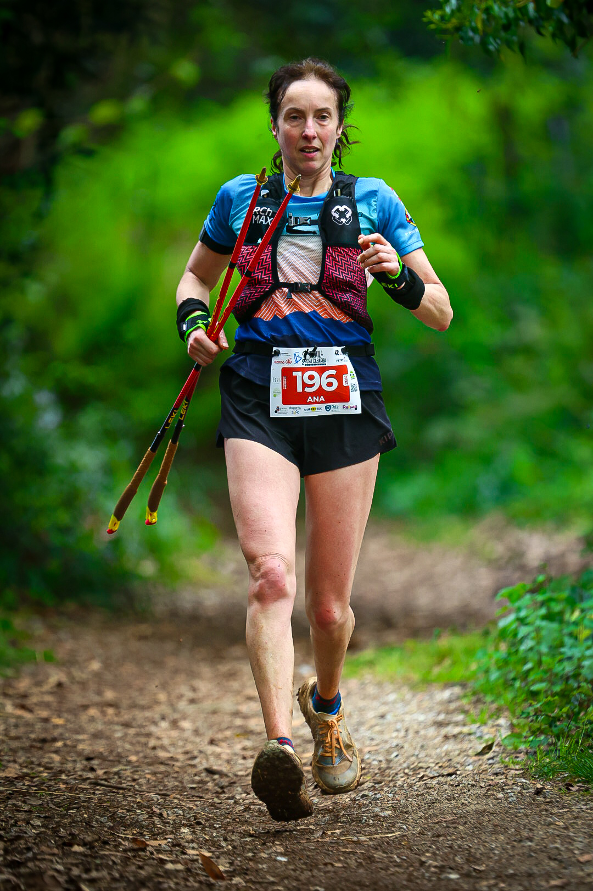

The fourth Trail Peña Cabarga was held on 5 April 2026, with its start and finish in Solares. Organised by Club Deportivo Ozono with the Medio Cudeyo Town Council, the event drew more than 750 athletes and was covered by the Image Media team.
The programme combined a 28K main race, a 14K event for runners and walkers, and a 6K youth vertical for cadet and younger categories. The 28K also hosted the FCDME individual mountain-running championship.

Álvaro Boo led the men's 28K at kilometres eight and 20, but Ángel Mier was strongest in the final section. Mier won in 2:34:10, ahead of Víctor Álvarez Martínez in 2:35:24 and Diego Díaz Pando in 2:37:06.
María Alles took control of the women's 28K during the second half and finished in 3:16:14. María Ricondo placed second in 3:23:29, while Verónica Ordóñez completed the podium in 3:26:38.
The 14K victories went to Aimar Larrea in 1:07:34 and Eva Fernández in 1:28:20. Fog remained around Pico Llen during the morning, adding a further mountain element to a race held in otherwise favourable conditions.
The Image Media coverage team comprised Eduardo Castro, Kaue, Lucas, Yamada, Clereson Martins and Jose Ramon Moreno. Their work followed the event from pole-assisted climbing and wooded trail sections to the finishing tape in Solares.